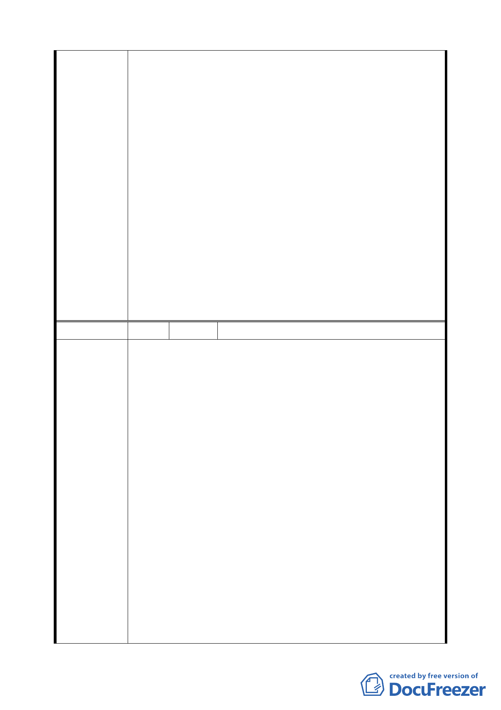

展計畫；文字部分請仍依法規原意加以註釋。
7.同意發展局所提說明「依本市土地使用分區管制規則第 10
條規定『建築物面臨 30 公尺以上之道路，臨接或面前道路
對側有河川，於不妨礙公共交通、衛生、安全，且創造優
美景觀循都市計畫程序劃定者，容積率得酌予提高』，且經
貿一路 35 公尺係因經貿園區辦理市地重劃與區段徵收作
業，由其他基地共同負擔所致，R1 街廓並無對價付出，且
經貿一路與二路側之住宅區容積率為 120%及 225%基於容
積率訂定之公平一致性，故維持原公展規定，不宜提高容
積率」。
8.延長第二期法定容積×5%之適用至 101 年 6 月 14 日，並取
消第三期時程獎勵規定。
9.同意發展局所提「為營造高品質旅館與購物娛樂中心，仍
宜維持 C2、C3 全街廓開發之規定」，維持原公展計畫。
10.同意發展局所提「配合建蔽率調整，修訂地下開挖率規
定」，維持原公展計畫。
編 號 15 陳情人 鄭文淵等 29 人
【編號l】
「(二)本地區各種使用分區之使用規定：4、本計畫區街廓編
號C4、C5、C6、C7、C8、C9之商業區(供商務設施使用)」建
議理由 :
1.內湖科學園區及大彎南土地與本區土地最具比價效應，而
且其地價遠低於本區，加以台北市政府十餘年來大幅開放
上揭地區之商業使用致嚴重壓縮本區商業使用需求，是本
區商業用地由高強度之商業使用轉作低強度之住宅使用實
陳情理由
為不得不然。
2.地主於區段徵收領回土地時即因商業用地同時擁有高強度
使用及容積獎勵雙重誘因，始願以較低之分配比例領回商
用土地;高強度商業用途已因前述不符市場需求，如再強加
該修訂內容所載限制，對地主豈非雙重懲罰 ?
3.建議應回歸市場機制面，依「台北市分區使用管制規則」
比照第三種商業區規定之精神，取消本項商業區不得作住
宅之限制。
【編號2】
「附件一、三、2：綜合設計放寬規定」建議理由:
29